1. giyeok, kieuk & ssangGiyeok
ㄱ has a g sound |
ㅋ has a kh sound* |
ㄲ has a kk sound* |
|---|
* ㄲ has a solid sound, and ㅋ has an haspirated pronunciation
Its' shape comes from the way our tongue touches the palate:

try this: put your tongue in that position and make the sound of an angry cat
2. Remember 1/2
"Hangeul syllables must have at least
one consonant and one vowel"

(ga)
📌 Consonants and vowels in korean will always sound the same. ㄱ will always sound like the "g" in gun 🔫
3. Remember 2/2
📌 Consonants are placed on top of the vowels, when they are horizontal vowels 고, and
📌 Beside of the vowels, when they are vertical vowels 기
고기🍖 (gogi: meat)
4. nieum
★Sounds like: the "n" in nose
Its shape comes from the way our tongue touches the palate:
Examples of ㄴ with vowels:
누나 👧 (nuna, older sister)
5. digeut, tieut & ssangDigeut
 |
||
|---|---|---|
ㄷ has a d sound |
ㅌ has a th sound* |
ㄸ has a tt sound* |
* ㄸ has a solid sound, and ㅌ has an haspirated pronunciation
Its' shape Also comes from the way our tongue touches the palate similar to ㄴ:
try this: put your tongue in that position and make the sound of an angry cat
6. rieul
Koreans don't hear the difference between 'r' and 'l'.
Depending on situation, can come out as either 'r' or 'l'.
★Sounds like: the "r" in rattlesnake
7. mieum
★Sounds like: the "m" in map
Its shape comes from the way our lips move:
🏄 모아나 (moana)
8. bieup
★Sounds like: the "b" in bucket
🦋 나비 (nabi, buttlerfly)
The bieup consonant looks like a little "b" 😮
9. siot
★Sounds like: the "s" in summit
Be careful!! when use siot with the vowel i (시), this sounds like "shi" in shirt 👕
MANY STYLES!!
Handwritten might vary from each person to other
=10. ieung
We have already seen this consonant
It has no sound when it is placed at the beggining of the vowel: 아
It has an "ng" sound we it is placed at the end, but we are going to see this later 😉
11. Review and cookies 🍪
Take a break and some cookies to see what have you learnt in this unit:
12. jieut
★Sounds like: the "j" in joy
MANY STYLES!!
Handwritten might vary from each person to other
=13. chieut
★Sounds like: the "ch" in champion
MANY STYLES!!
Handwritten might vary from each person to other
= =14. pieup
★Sounds like: the "ph" in part
(an haspirated p)
15. hieut
★Sounds like: the h in house
MANY STYLES!!
Handwritten might vary from each person to other
=